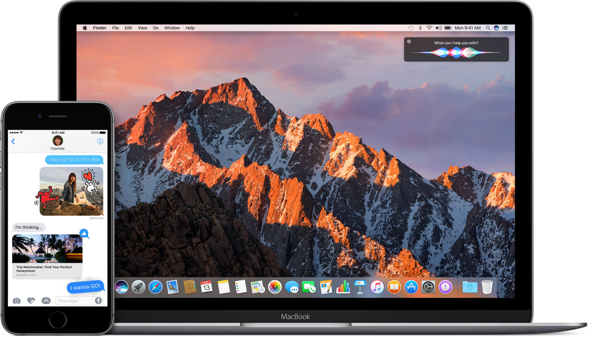
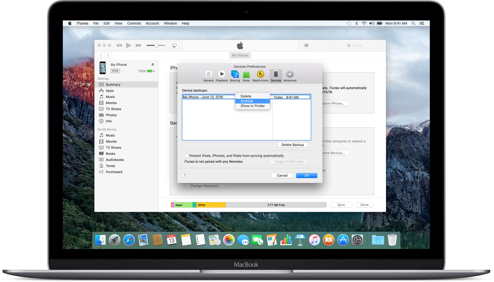
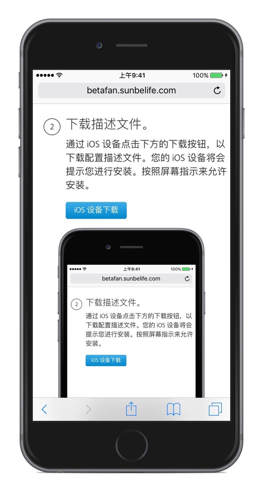
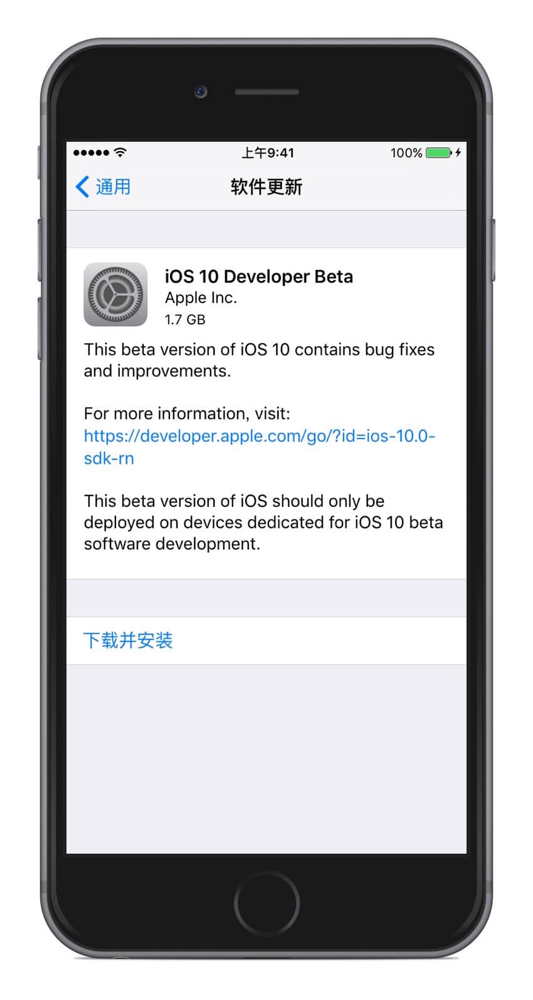
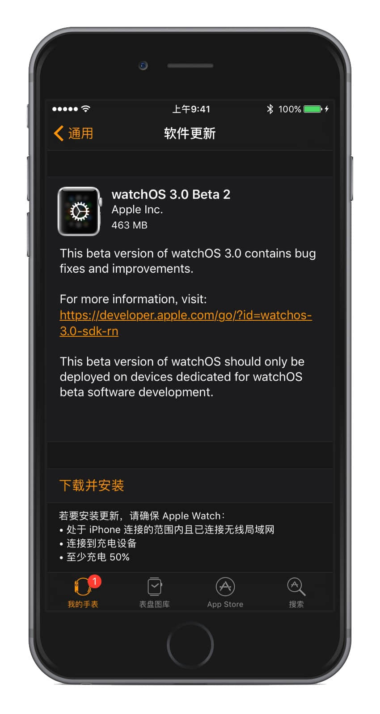

欢迎来到尝鲜派
在这里，您既可以帮助苹果把即将发布的 iOS 10 和 Apple watchOS 3 做成史上最佳的版本，亦可以查看新系统的体验报告，第一时间了解新系统改进之处与体验效果。
开始使用 iOS 10
1
归档 iOS 备份
请注意，您即将安装 Beta 版软件。请始终在安装 Beta 版 iOS 前备份您的数据和文件。我们建议您在安装 iOS Beta 版前进行 iTunes 备份并将其归档。

2
下载描述文件
通过 iOS 设备点击下方的下载按钮，以下载配置描述文件。您的 iOS 设备将会提示您进行安装。按照屏幕指示来允许安装。

3
更新您的 iOS 设备
运行 iOS 8.1.3 或更高版本的 iOS 设备将以无线方式自动接收最新的 Public Beta 版软件。轻点“设置”>“通用”>“软件更新”来安装任何可用的 Beta 版软件。

开始使用 watchOS 3
1
下载描述文件
Apple Beta 版软件计划现可用于 watchOS，请通过 iOS 设备点击下方的下载按钮，以下载配置描述文件。您的 iOS 设备将会提示您进行安装。按照屏幕指示来允许安装至 Apple Watch。

2
检查更新
打开 iPhone 上的 Watch App，进入通用——系统更新，即可收到 watchOS 3 的推送。

3
注意事项
本 Beta 版本升级后无法降级，请在考虑过后再选择是否升级至测试版，请在升级时保证手表有 50% 的电量，建议将手表放入充电器进行更新。